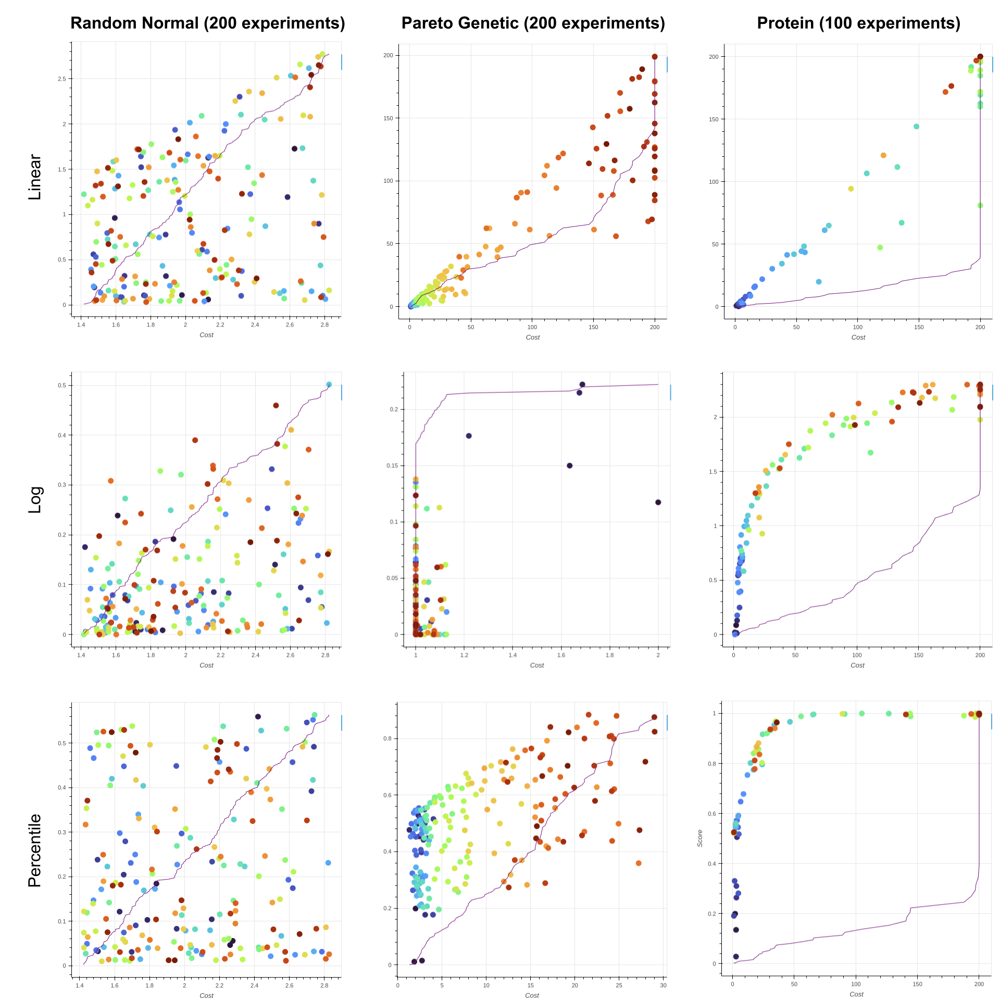

Stronger Hyperparameters with Protein
Power up your hyperparameter sweeps with Protein, PufferAI's new algorithm based on ImbueAI's CARBS. The original method stands for Cost AwaRe Bayesian Search because it models the Pareto frontier of cost (usually wall-clock time or steps) and score (your environment's performance metric). Our method modifies CARBS to:
Fix major edge cases. A big motivation for our new algorithm was that CARBS can be show to fail in very simple synthetic tests where any reasonable algorithm should succeed. For example, if CARBS has a confident but wrong model of the Pareto frontier, it degenerates to random sampling. It is very susceptible to noise in individual Pareto points (like lucky seeds) and in the Gaussian Processes it uses to model cost and score.
Fix data normalization. Gaussian processes expect normally distributed data. Performance decays quite rapidly if you feed in big numbers. CARBS is missing normalization in a couple of places, so you can have it work great on some environments and not at all on others.
Simplify the algorithm: CARBS is over 2,500 lines. The PufferLib sweep file is ~500. This is in keeping with our focus on simplicity in all things, and it makes reasoning about the code much easier.
CARBS
There's already a detailed manuscript on arXiv, but it's pretty dense, so read this section if you aren't already familiar with the algorithm. CARBS starts by defining the Pareto frontier as the subset of experiments where no other experiment is both better and faster, that is, higher score y and lower cost c.
$$ \text{PF} = \{ i \in [1:t] \mid y_{i} > y_{j} \lor c_{i} < c_{j}, \ \forall j \neq i $$
In practice, CARBS starts out by running a few random hyperparameter sets to seed the Pareto front. From there, it picks new candidate hyperparameters with a normal sample around existing Pareto-optimal hyperparameters and downweights them based on distance.
$$P_{\mathrm{search}}\left(\mathbf{x}\right)=\max_{i\in \rm{PF}}\left[\mathrm{exp}\left(-\frac{\left|\mathbf{x}_{i}-\mathbf{x}\right|^2}{2\sigma_{\mathrm{search}}^2}\right)\right]$$
Suppose we generate a few thousand candidates. To help pick the best one, CARBS trains three Gaussian Processes.
$$\mathcal{GP}_{y} \leftarrow \max_{\theta} \left[ p\left(y | \{\mathbf{x}_{i}, y_{i}\}_{i \in [1:t]}, k_{\theta} = k_{\mathrm{lin}} + k_{\mathrm{Mat}}\right) \right]$$
$$\mathcal{GP}_{c} \leftarrow \max_{\theta} \left[ p\left(c | \{\mathbf{x}_{i}, c_{i}\}_{i \in [1:t]}, k_{\theta} = k_{\mathrm{lin}} + k_{\mathrm{Mat}}\right) \right]$$
$$\mathcal{GP}_{\mathrm{pf}} \leftarrow \max_{\theta} \left[ p\left(y | \{c_{i}, y_{i}\}_{i \in PF}, k_{\theta} = k_{\mathrm{RBF}}\right) \right]$$
These are just basic supervised learning problems. The first two map a vector of hyperparameters to the score and cost of the experiment. The last is a bit trickier: it maps the cost of each Pareto point to its score. The idea is that, if you tell CARBS how long you have to run an experiment, it should know how good the result can be. Now to actually select the points, CARBS uses these GPs to define an acquisition function:
$$\alpha_{\mathrm{EI-th}}\left(\mathbf{x}\right) = \mathbb{E}_{\mathcal{GP}_{y}} \left[ \mathrm{ReLU}\left( \mathcal{GP}_{y}\left(\mathbf{x}\right) - \max\left( \tilde{y}_{\mathrm{pf}}\left(\mathbf{x}\right), \tilde{y}_{\mathrm{th}} \right) \right) \right]$$
This is run on each of the candidate hyperparameter vectors x that we got from P_search. If you ignore the second max for a moment and just use y_pf, then this is the difference between predicted score under GP_y and how well GP_pf thinks we can possibly do with any experiment that costs GPc(x). In practice, there's an extra term y_th to control exploration that we'll talk about soon. For now, just take the max of this function and you have your CARBS hyperparameter suggestion.
...Are bad for you?
This algorithm steamrolled ProcGen, so it's clearly pretty good. But the longer you look at it, the more problems you notice. First of all, P_search biases predictions to be close to existing Pareto points. Typically, you want longer and longer experiments over time as you become more confident in the results. So to counteract P_search keeping total timesteps (and therefore the run length) close to an existing point, there needs to be a counterbalance towards higher cost experiments. This is where y_th comes in. CARBS samples a random cost between the min and max pareto point and take a max with the existing sample y_pf. This punishes low-cost samples across the board
More problems come from explicitly modeling the Pareto frontier with y_pf. Suppose that all three Gaussian processes are perfect models. CARBS will then define GPy(x) - y_pf = 0. Since the acquisition function is 0 everywhere, you just end up with random sampling. This is true even if you don't actually have good experiments across the frontier. So even if CARBS fits a perfect log-linear scaling law to your problem, it won't actually try to run those more expensive experiments. And GP_pf is very sensitive, because it is only trained with the Pareto-optimal subset of hyperparameters. A lucky seed can throw it off, and the only remedy in CARBS is to periodically resample Pareto points, which requires rerunning old experiments 20% of the time by default. If you have even 5 Pareto points, you're going to have to wait 25 experiments on average before you maybe get an opportunity to correct one lucky seed.
Power up with Protein!
Our algorithm keeps GP_y and GP_c. Protein eliminates P_search and GP_pf, and it replaces the acquisition function with the following:
$$w(x) = \text{GP}_y(x) \cdot \left(1 - \left| \alpha U - \text{GP}_c(x) \right| \right), \quad U \sim \mathcal{U}(0, 1)$$
Alpha is fixed to 1.25 in our experiments. So this method picks a random cost between 0 and 1.25 and then scores candidate points x by penalizing their predicted score GP_y(x) by the predicted distance from that cost. We normalize scores between 0 and 1 and log costs between 0 and 1.25, so the predicted target cost can be up to ~77% (25% in log space) more expensive than the most expensive point. But we're still sampling around Pareto points only, so runs cannot become arbitrarily expensive without expanding the Pareto front.
Protein is a simpler algorithm than CARBS, but it is robust in ways that CARBS isn't. For example, Protein doesn't care that much if you get a lucky experiment because it doesn't rely on a model of the Pareto frontier. If Protein perfectly fits both GPs, 1/5 (alpha / (1 + alpha)) of experiments will target expanding the frontier to higher-cost regions. It also doesn't get stuck in low-cost regions that are difficult to model, which is a problem we saw with CARBS.
A few other optimizations we made that mattered quite a lot:
- Instead of using only the final cost and score of an experiment, we downsample the training curve to 10 points and use them all as training data for both GPs.
- CARBS seeds with several random trials. We instead use a single run with a reasonable set of defaults. Because this gives us 10 pareto points, we don't have to waste our first 10-20 experiments of every sweep.
- We neatly normalize the search space of each hyperparameter between -1 and 1 to keep data in the domain expected by GPs.
- We set the mean function for GPc to 1. This makes it overestimate how long unconfident samples will take during scoring.
The core logic for Protein is under 100 lines, so if you want to know every detail, read the code!
Speedrunning RL
How fast can you solve Breakout with really good hyperparameters? We ran CARBS vs. random search, a pareto genetic algorithm (similar to Protein but without the GPs), and CARBS.
We also wrote some synthetic tasks to evaluate various methods. There is only one parameter to fit, but score is either a linear, logarithmic, or percentile function of cost. The costs for the log and percentile tasks have 20% noise to make it harder. We evaluated a random search that takes normally distributed samples from hyperparam default means, a pareto genetic algorithm that works similarly to Protein but without the gaussian processes, and Protein. The source for all of the methos is in pufferlib/sweeps.py. The synthetic benchmarks to reproduce our experiments are in tests. Here are the results:

Random sampling fails because it never evaluates high-cost parameters. Pareto genetic sometimes works if you give it enough runs, but it can get stuck if the Pareto points are too densely distributed (this caused it to fail the log task on this run). Protein solves them all, and in fewer experiments!
Catabolic Variations
We tried dozens of different scoring functions, normalization techniques, and objectives before settling on the current method. Here are some things that didn't work:
Fancy scoring normalization: It is common for hyperparameter sweep algorithms to apply some sort of scaling transformation to the target metric. But reinforcement learning score curves are quite varied! Breakout is scored from 0-864 points, where 550 isn't much different from 570, and 860-864 is just a matter of consistently hitting the last brick or two. Some environments use win-rate as a metric, so 0.999 is 10x better than 0.99. Other environments like Enduro are endless and have virtually linear learning curves with ever-improving scores. In our synthetic tasks, it was quite easy to improve one shape of curve at the expense of the others, but simply normalizing the min and max scores from 0 to 1 was the best overall.
Anything relying on a difference between GPs: We found that the trained GPs are at most directionally correct and quite noisy, with meaningless learned variances. This was the main reason we scrapped GP_pf.
Anything relying on specific Pareto points: One early variant attempted to maximize the distance between the next experiment and existing pareto points in cost space. It could be shown to converge to binary search under perfect GPs, which is a really nice property to have. Unfortunately, relying on an individual Pareto point once again creates instability to lucky seeds. The method worked great on initial synthetic tests but collapsed when we introduced noisy score estimates.
Maximizing information gain: Another early idea was to reward Protein based on the improvement made per compute spent. We could only make this work with a known learning curve shape, because the meaning of relative changes in score varies wildly per environment. This is still one of my favorite ideas, but it would require substantial rethinking and perhaps online curvature estimation.